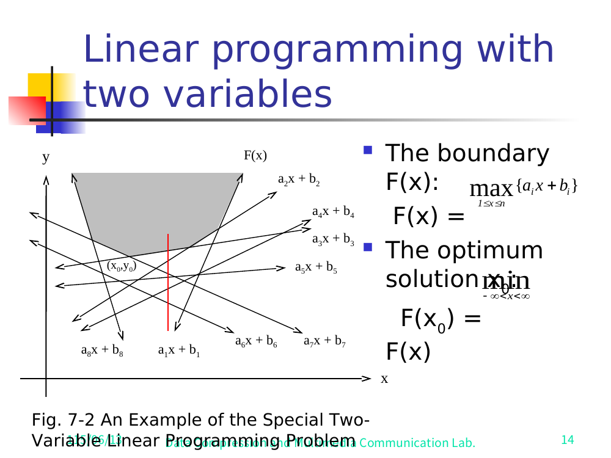

Linear programming (LP) means: you have some quantities you can choose (the variables, say x and y), and you want to make one number as small (or large) as possible — that number is the objective, and it's linear, meaning it looks like ax + by (just variables times constants, added up — no squares, no products). But you can't choose freely: you must obey a list of constraints, each also linear, each an inequality like aᵢx + bᵢy ≤ cᵢ (read "≤" as "at most"). The job: find the (x, y) that obeys every constraint and makes the objective smallest. "Programming" here is an old word for planning, nothing to do with code.
A tiny example in words: a bakery makes x loaves and y cakes; flour and oven-time are limited (those are the ≤ constraints); we want to minimize cost ax + by. LP is everywhere — diets, shipping, scheduling — wherever you optimize under linear limits.
Picture the plane of all possible (x, y). One inequality aᵢx + bᵢy ≤ cᵢ draws a straight line and keeps only the side that satisfies it — a half-plane (half the plane, on one side of a line). Stack up n such half-planes and only the points obeying all of them survive. That surviving overlap is the feasible region: every point in it is a legal choice (feasible = obeys all constraints; optimal = the best feasible one). It's a convex polygon-ish area — possibly unbounded. The optimum sits somewhere on its edge.
General two-variable LP minimizes ax + by subject to n half-plane constraints aᵢx + bᵢy ≤ cᵢ. By a change of variables it reduces to the easy-to-see simplified form:
Each constraint y ≥ aᵢx + bᵢ says the feasible point must lie on or above that line. So the feasible region is everything above the highest line at each x. We want the lowest feasible y — the bottom of that region.
In the simplified form, each constraint y ≥ aᵢx + bᵢ forces our point to sit on or above that line. To be feasible at a given x, the point must be above every line at once — so it must be above the highest one there. Define the boundary function F(x) as exactly that: at each x, the height of whichever line is on top.
Tracing the top line across all x draws the upper envelope — the jagged ceiling formed by always taking the highest line. It is the lower edge of the feasible region: the lowest you're allowed to be at each x. Minimizing y means finding the lowest point on this ceiling.
Here is the key fact. Because F(x) is the pointwise maximum of straight lines, it is convex — it bends only upward, like the inside of a bowl. (Why: each line is straight; taking the top one at every x can only ever kink upward where a steeper line overtakes, never downward.) So F(x) is a single valley: it falls, hits one bottom, then rises — a V or bowl shape, never a W with two dips. The optimum is that bottom:

Fig. 7-2. The lines are the constraints; F(x) is the highest one at each x (the jagged ceiling). The shaded feasible region sits above it; the convex valley bottoms out at the optimum (x₀, y₀) — the lowest point of the upper envelope.
and (x₀, y₀) with y₀ = F(x₀) is the answer. Convexity is the whole engine: a valley has one bottom, so a single left/right test at any probe point tells you which way the bottom lies — exactly what makes the fast pruning below possible.
F(x) = the upper envelope of the constraint lines (highest line at each x), and it is convex. The optimum is not the highest line — it's the lowest point of the highest-line-at-each-x curve.Tiny example you can see — two lines, y ≥ x and y ≥ −x. The envelope is the higher of the two at each x: the falling line on the left, the rising line on the right, meeting in a V at the origin. Lowest point = (0, 0).
Pick a probe abscissa xₘ and evaluate yₘ = F(xₘ) — find the line(s) active (on top) there. Read off the slope g of the active constraint:
| Active slope at xₘ | Envelope is… | So the bottom x₀ is… |
|---|---|---|
g > 0 (rising) | still descending to the left | left: x₀ < xₘ |
g < 0 (falling) | still descending to the right | right: x₀ > xₘ |
| both signs present | at its bottom right here | xₘ itself is x₀ ✓ |
When several lines meet at xₘ, use g_max/g_min = the max/min slope among the active lines: both positive ⇒ x₀ left; both negative ⇒ x₀ right; opposite signs (g_min < 0 < g_max) ⇒ xₘ is the optimum (Fig. 7-6).
How a pair gets pruned. Group the n constraints into n/2 pairs; intersect each pair, and let xₘ be the median of the n/2 intersection x-values. Suppose the test says x₀ < xₘ. Take any pair whose two lines cross at some x > xₘ. To the left of that crossing one line of the pair is strictly below the other — and since we only care about x ≤ xₘ < crossing, that lower line can never be on the upper envelope near x₀, so it is redundant and we delete it. Half the pairs (those crossing on the far side of xₘ) qualify, so n/4 constraints die every iteration.
O(n) work (pairing, one median, one F-evaluation) and discards a constant fraction (≈1/4), so T(n) = T(3n/4) + O(n) = O(n) — the same prune-and-search payoff that makes median-of-medians selection (Lesson 5) linear.Three constraints in simplified form. Find the upper envelope's lowest point.
Work out F(x) = max(L₁,L₂,L₃), find where it bottoms out, then reveal.
L₁ = L₂: x+1 = −x+5 ⇒ x = 2, y = 3. At x=2 both L₁ and L₂ give 3, and the floor L₃ gives 2 — so the floor is below them and inactive. For x < 2 the falling line L₂ is on top; for x > 2 the rising line L₁ is on top. So the envelope is a clean V with its vertex at (2, 3).
At xₘ = 2 the active lines are L₂ (slope −1) and L₁ (slope +1). g_min = −1 < 0 and g_max = +1 > 0 — opposite signs — so by the rule this point is the optimum. Answer: x₀ = 2, y₀ = F(2) = 3. (The floor L₃ = 2 never touches the envelope here, so it's a redundant constraint — exactly the kind prune-and-search would discard.)
F(0) = max(0+1, 5, 2) = 5, achieved by L₂ alone, slope −1 < 0 ⇒ envelope still descending to the right ⇒ x₀ > 0. Correct: the true bottom is at x₀ = 2, to the right. The single slope sign pointed the right way.
Pick before you read the feedback. Getting it wrong then seeing why builds memory better than re-reading.
Primary source: R.C.T. Lee, S.S. Tseng, R.C. Chang, Y.T. Tsai — Introduction to the Design and Analysis of Algorithms, Ch 7 §7.x on Prune-and-Search (your Alg06 slides, "Prune-and-Search"). Study Fig. 7-2 (the F(x) envelope plot, slide 14) and Fig. 7-6 (the three slope-test subcases, slide 17), then re-trace the V above on paper. The 1-center problem (smallest enclosing circle) is another prune-and-search O(n) result in the same chapter — same median-probe-then-discard rhythm.
See also the Glossary → Ch7 and the full chapter note (A06) for the general-LP reduction and the F₁/F₂ feasibility cases.
📣 I'm your teacher — ask me anything. Want a worked general-LP reduction (the x′=x, y′=ax+by substitution)? Want the n/4 pruning argument drawn out line by line? Want a harder envelope with 5 lines to trace? Just say so.
Score this lesson out of 5 to yourself. 4–5 → we move to Lesson 7. ≤3 → tell me which question and we drill it.